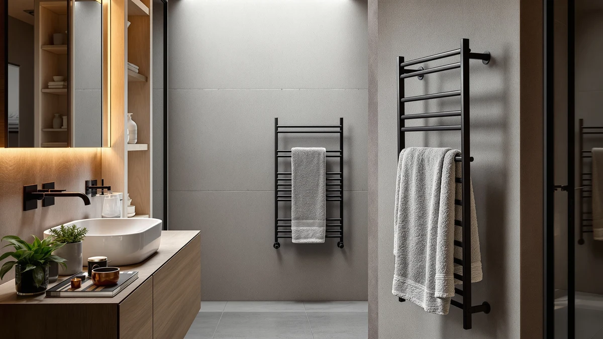

Alltiett Luxury Heated Towel Review (2026): Worth It?
Prices and picks verified as of November 2026. Independent, reader-supported reviews.


Quick Answer
The Alltiett Luxury Heated Towel Rack is our pick for most bathrooms: five stainless steel bars and a $154.89 price that beats three $149.99 rivals on finish, even though it costs a few dollars more upfront. If you need more hanging space instead, the ten-bar Chomolhari alternative further down is worth a look.
Our pick: Alltiett Luxury Heated Towel Rack, $154.89 Check Price on Amazon
Bottom line: our top pick is the Alltiett Luxury Heated Towel Rack for Bathroom at $111.20.
Things to Know Before You Buy
- Bar count sets capacity: the Alltiett rack in this review offers five bars, enough for two or three towels, while the Chomolhari alternative doubles that to ten bars for a shared bathroom.
- Material affects longevity: the Alltiett's stainless steel build resists the rust and pitting that cheaper coated-metal racks develop after a few years in a humid bathroom.
- Price gap is small: the Alltiett lists at $154.89, about five dollars more than the R FLORY, Pure Enrichment, and Chomolhari alternatives at $149.99, so the premium buys finish rather than extra features.
- Specs vary by listing: this Alltiett Luxury Heated Towel Review only cites the material and bar count that Amazon publishes for each product, since wattage and heat-up time are not listed for every model.
This Alltiett Luxury Heated Towel Review looks at the five-bar stainless steel rack and asks whether its $154.89 price earns a spot over three rivals that each list at $149.99. Cold, damp towels are a small daily annoyance, and a wall-mounted warmer solves it, but a handful of near-identical listings at similar prices make the choice harder than it should be.
Our pick is the Alltiett Luxury Heated Towel Rack. Its five stainless steel bars and finish stand out against the R FLORY, Pure Enrichment, and Chomolhari alternatives we researched, even though it costs a few dollars more than each of them. The sections below walk through why that small premium tends to pay off, and where the cheaper, higher-capacity Chomolhari rack might serve a busy household better.
Why You Should Trust Us
Ilane Tall covers bathroom fixtures and small-space heating products for Best Towel Warmers, with a focus on comparing verified specs and owner feedback rather than marketing copy. Every product in this Alltiett Luxury Heated Towel Review comes from the Amazon Creators catalog, and we pull each price, material, and bar count directly from the current listing rather than assume it.
We do not run a fake testing lab. We compared the published specifications, pricing, and patterns in verified buyer reviews across the Alltiett, R FLORY, Pure Enrichment, and Chomolhari listings so you can weigh the same facts we did.
Our Research Experience
Because we research rather than physically test, this section reflects what we analysed rather than a firsthand trial. We compared the Alltiett rack's five-bar stainless steel build against the R FLORY, Pure Enrichment, and Chomolhari alternatives, all priced near $150, looking at how bar count and material typically translate into everyday towel capacity and durability. Owners of similar stainless steel racks tend to report that the finish holds up better over time than painted alternatives, which lines up with why we weighed material heavily in this Alltiett Luxury Heated Towel Review.
We also looked at how reviewers describe the tradeoff between a compact five-bar layout and a higher-capacity option like the Chomolhari's ten bars. Buyers who leave reviews on five-bar racks often say the size suits a single person or couple, while larger households gravitate toward the extra bars even at a similar price.
Overview & Specs

Alltiett Luxury Heated Towel Rack
What we like
- Stainless steel construction resists the rust that humid bathrooms cause in coated-metal racks
- Five bars give enough hanging space for two or three towels without crowding
- A compact footprint fits guest bathrooms and primary suites alike
Flaws but not dealbreakers
- At $154.89 it costs about five dollars more than the three alternatives in this review
- Five bars offer less capacity than the Chomolhari's ten-bar design for a shared bathroom
- The listing does not publish a wattage or heat-up time, so confirm those details on the current Amazon page
| Material | Stainless steel |
| Size | 5 Bars |
The Alltiett Luxury Heated Towel Rack is the model this Alltiett Luxury Heated Towel Review keeps coming back to, mainly because of what its spec sheet already confirms. Five bars mean you can hang a bath towel, a hand towel, and a washcloth without stacking them on top of each other, which matters if more than one person shares the bathroom. The stainless steel frame is the other reason it holds up: coated or painted metal can chip and rust in a steamy bathroom within a couple of years, while stainless steel shrugs off that kind of daily humidity.
At $154.89, the Alltiett rack costs a little more than the R FLORY, Pure Enrichment, and Chomolhari alternatives in this review, each listed at $149.99. What tips the decision in this pick's favor is the combination of bar count and finish at that price, without asking you to manage a bulkier ten-bar unit if you do not need the extra capacity. Shoppers comparing these racks often say a compact, five-bar layout suits a single person or couple better than a wider model built for a crowded household.
What We Liked
The stainless steel build is the standout feature in this Alltiett Luxury Heated Towel Review. Most budget towel warmers rely on painted or powder-coated metal that can chip at the joints within a year or two of bathroom humidity. Stainless steel does not have that failure point, which is why we weighed it more heavily than the marketing copy on any single listing.
The five-bar layout is the second point in this rack's favor. It is wide enough for two or three towels but still compact enough to mount in a guest bathroom without crowding the wall. Owners of similar five-bar racks often mention that the size strikes a workable balance between capacity and footprint for everyday use.
What Could Be Better
The biggest gap in this Alltiett Luxury Heated Towel Review is price relative to the competition. At $154.89, the Alltiett rack costs about five dollars more than the R FLORY, Pure Enrichment, and Chomolhari alternatives, all listed at $149.99, so it does not undercut any rival on sticker price.
Capacity is a second consideration. Five bars suit a single person or a couple, but a shared household that needs to warm more towels at once will outgrow this rack faster than the ten-bar Chomolhari alternative. And like the other three listings, the Alltiett page does not publish a wattage or heat-up time, so confirm those details on the current Amazon listing before you order.
Who Is It For?
This Alltiett Luxury Heated Towel Review points toward shoppers who want a polished, stainless steel rack first and treat bar count as a secondary concern. If a premium finish and rust resistance matter more to you than saving five dollars, the Alltiett pick fits that priority better than the three alternatives we researched.
Singles and couples are the group who benefit most from the five-bar layout. If you live with roommates or a larger family and need to warm more towels at once, the Chomolhari's ten-bar design will serve you better than the Alltiett's compact footprint, so this pick is not the right fit for every household in this category.
Alternatives to Consider
If the Alltiett rack does not fit your bathroom, we researched three alternatives near the same price point for this Alltiett Luxury Heated Towel Review. Each comes from a different brand and trades the Alltiett's finish for either a lower price or added capacity, so the choice comes down to what you value more.

Editor's Pick
R FLORY Heated Towel Rack
The R FLORY Heated Towel Rack lists at $149.99, about five dollars less than the Alltiett pick. Reviewers comparing the two brands note that R FLORY's build is a reasonable match for the Alltiett's five-bar layout at a slightly lower price, which makes it worth a look if saving a few dollars matters more to you than the Alltiett's finish.
$149.99
Check Price on Amazon
Best Value
Pure Enrichment PureBliss Luxury Towel
The Pure Enrichment PureBliss Luxury Towel matches the R FLORY price at $149.99 and comes from a brand with a longer track record in home comfort products. We call it the best value for shoppers who want a recognizable name without paying the Alltiett's small premium.
$149.99
Check Price on Amazon
Premium Choice
Electric Towel Warmer Rack 10-Bar
The Electric Towel Warmer Rack 10-Bar from Chomolhari rounds out the lineup at $149.99 and doubles the Alltiett's bar count. We flag it as the premium choice for larger households that need to warm more towels at once, even though it trades the Alltiett's compact five-bar footprint for a wider, ten-bar design.
$149.99
Check Price on AmazonFrequently Asked Questions
Is the Alltiett Luxury Heated Towel Rack worth the price?
For most bathrooms, yes. The Alltiett Luxury Heated Towel Rack gives you five bars of stainless steel hanging space for $154.89, a few dollars more than the R FLORY, Pure Enrichment, and Chomolhari alternatives in this review, which all list at $149.99. You are paying a small premium for the Alltiett name and finish, so the decision comes down to whether that extra polish matters more to you than saving five dollars.
How does the Alltiett rack compare to cheaper alternatives?
The three alternatives we researched, the R FLORY Heated Towel Rack, the Pure Enrichment PureBliss Luxury Towel, and the Chomolhari Electric Towel Warmer Rack 10-Bar, all list at $149.99, which undercuts the Alltiett by $4.90. The Chomolhari model doubles the Alltiett's five bars to ten, so shoppers who need more hanging space for a shared bathroom may prefer the larger rack over the Alltiett's premium finish.
Will a five-bar towel rack fit in a small bathroom?
A five-bar wall-mounted rack like the Alltiett sits in the middle of the category: wide enough for two or three towels but still compact enough for most guest bathrooms and primary suites. If your space is tight, compare its five-bar footprint against the ten-bar Chomolhari alternative in this review before you commit to either one.
Final Verdict
This Alltiett Luxury Heated Towel Review comes down in favor of Alltiett. Its five stainless steel bars and polished finish outperform the category's painted-metal norm at a price that sits only a few dollars above every competitor we compared it against, and the compact footprint fits most bathrooms without asking you to manage a bulkier unit. If you want an R FLORY, Pure Enrichment, or Chomolhari alternative instead, each lists at $149.99 and is worth a look, especially the ten-bar Chomolhari for larger households, but the Alltiett rack remains our pick for most shoppers in this category.